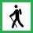

14/01/2024
CIRCULAR AL MOSCADERO DESDE PEÑA ANGULO
Promotor: Jorge Baraka
Lugar de salida: PUERTO DE PEÑA ANGULO (ALAVA)
Web externa: 
Distancia: 15km
Tiempo: 5h
Desnivel: 850m
21/01/2024
Subida a Arantzazu por arroyo Urkullu
Promotor: Mikel
Lugar de salida: Santuario Arantzazu (Gipuzkoa)
Web externa:
Distancia: 13km
Tiempo: 5h
Desnivel: 680m

04/02/2024
PR-BI 82. El camino de los carboneros (y subida a Leungane)
Promotor: Esther
Lugar de salida: Barrio Oba (Bizkaia)
Web externa:
Distancia: 12,38km
Tiempo: 4:43h
Desnivel: 772m